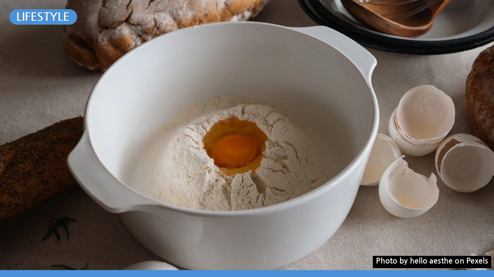
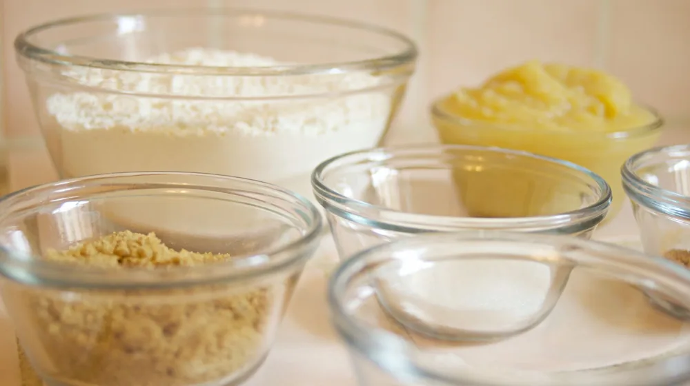
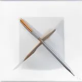

홈베이킹 입문 필수 도구 5가지: 이 정도만 있어도 시작합니다
사진: hello aesthe / Pexels (무료 이미지, 출처 표기)
왕초보가 흔히 하는 실수: 장비부터 다 사지 마세요

베이킹을 시작하려 할 때 가장 먼저 하는 실수는 인터넷 쇼핑몰의 '베이킹 풀세트'를 덜컥 구매하는 것입니다. 의욕 넘치게 준비한 도구 중 절반 이상은 한 번도 쓰지 않고 창고로 들어가기 일쑤입니다. 처음에는 가장 기본이 되는 도구 몇 가지만 갖추고, 만들고 싶은 메뉴가 늘어날 때마다 도구를 하나씩 추가하는 것이 불필요한 지출을 줄이는 지름길입니다.
이것만 있으면 시작하는 홈베이킹 필수 도구 5가지
무엇부터 사야 할지 막막하다면 아래 표에 정리된 5가지 필수 도구부터 준비해 보세요. 이 도구들만 있어도 쿠키, 스콘, 파운드케이크 등 기본적인 제과 종류는 모두 만들 수 있습니다.
오븐 vs 에어프라이어, 무엇을 선택해야 할까?
집에 에어프라이어가 있다면 굳이 처음부터 비싼 오븐을 살 필요는 없습니다. 최근 출시되는 에어프라이어는 열풍을 순환시키는 컨벡션(Convection) 오븐과 원리가 거의 같아 스콘이나 타르트 같은 간단한 제과류는 충분히 구워낼 수 있습니다. 다만, 열풍 때문에 반죽 표면이 쉽게 마를 수 있으므로 수분이 중요한 제빵이나 정밀한 온도 조절이 필요한 케이크류를 만들 때는 미니 오븐을 사용하는 것이 훨씬 안정적입니다.
실패 없는 베이킹 도구 구매 시 주의사항
도구를 고를 때는 디자인보다 안전성과 내구성을 먼저 따져야 합니다. 특히 반죽틀이나 주걱처럼 열에 노출되는 도구는 유해 물질이 나오지 않는 재질인지 확인해야 합니다. 실리콘 도구는 내열 온도가 최소 200도 이상인 제품을 선택하고, 코팅 팬을 구매할 때는 불소수지 코팅 유해성 논란이 없는 '테플론 프리' 또는 '세라믹 코팅' 제품을 고려해보는 것도 좋은 방법입니다. 또한 식약처의 식품위생법에 따른 '식품용' 안전 표시 마크가 있는지 꼭 확인하세요.
초보자를 위한 알뜰 구매 팁
- 저울과 오븐계는 좋은 것으로: 베이킹 결과물에 직접적인 영향을 주는 전자저울과 오븐 내부 온도를 측정하는 오븐 온도계만큼은 성능이 검증된 브랜드 제품을 구매하는 것이 이중 지출을 막는 방법입니다.
- 소모품은 가성비 위주로: 믹싱볼, 짤주머니, 종이호일 등은 다이소나 대형마트의 가성비 제품으로 시작해도 아무런 문제가 없습니다.
- 한 번에 사지 않기: 만들고 싶은 레시피를 먼저 정한 뒤, 해당 레시피에 꼭 필요한 팬(예: 머핀컵, 파운드 틀 등)만 하나씩 개별 구매하세요.
🔗 이 글도 함께 보면 좋아요: 미니멀 라이프 시작하기, 실패 없는 3단계 비우기 법칙
관련 추천 상품
이 포스팅은 쿠팡 파트너스 활동의 일환으로, 이에 따른 일정액의 수수료를 제공받습니다.
한눈에 보는 상품 목록

디지털 전자저울
일체형 실리콘 주걱
스테인리스 믹싱볼